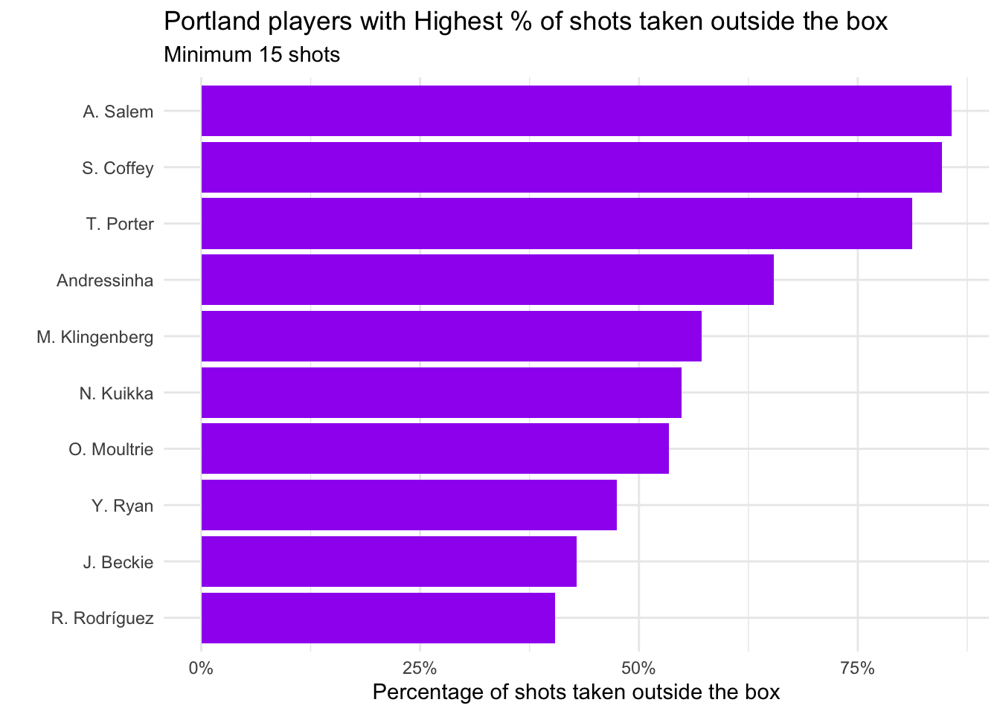

library(tidyverse)
library(viridis)
library(kableExtra)
library(ggridges)
library(devtools)
devtools::install_github("nwslR/nwslR", ref = "v0.0.0.9002")
library(nwslR)Lab 04 - National Women’s Soccer
Data wrangling
Joins
Sports analytics
National Women’s Soccer League
Goals
In this lab, you will:
- Develop proficiency with data-wrangling functions
- Join multiple datasets from the National Women’s Soccer League
- Use wrangling and visualization to answer questions about team and player performance for the Portland Thorns FC
Joins allow us to combine information from multiple data sources into a single analytical workflow.
Getting Started
- You will be working in your Lab 03–04 Groups (see Blackboard).
- Download the
.qmdfile for this lab from our class GitHub repo. - Refer back to Lab 01 for detailed workflow and submission instructions.
Packages
We will primarily use the tidyverse package. Additional packages provide color palettes, table formatting, ridge plots, and access to NWSL data.
Data: The Portland Thorns FC
For this lab, you will work with data about the Portland Thorns FC, a National Women’s Soccer League (NWSL) team.
In 2021, the Thorns won the:
- NWSL Challenge Cup
- Women’s International Champions Cup
- NWSL Shield
The data come from the nwslR package, which provides tools to scrape and organize publicly available NWSL data.
The following functions pull different types of data:
load_matches()– match-level dataload_players()– player-level dataload_teams()– team informationload_metrics()– metric definitions
Running the code below will load four datasets into your environment.
matches <- load_matches()
players <- load_players()
teams <- load_teams()
metrics <- load_metrics()Exercises
All plots should follow best visualization practices discussed in lecture, including clear titles, labeled axes, and thoughtful aesthetic choices.
All code should follow the tidyverse style guidelines.
Data Wrangling
Before beginning the analysis, you will need to wrangle the data to focus only on Portland Thorns matches.
To add team names and abbreviations, we need to join the teams data twice:
- once for the home team
- once for the away team
We want the following new variables:
home_team_namehome_team_abbraway_team_nameaway_team_abbr
The code below creates home_team_info and joins it to portland_matches.
home_team_info <- teams |>
select(home_team_id = external_team_id,
home_team_name = team_name,
home_team_abbr = team_abbreviation)
portland_matches <- portland_matches |>
left_join(home_team_info)Joining with `by = join_by(away_team_id)`Match Analysis
Player Stats
The following code loads match-level player statistics. This step may take several minutes.
safe_load_pms <- purrr::possibly(load_player_match_stats,
otherwise = data.frame())
player_stats <- purrr::map_df(portland_matches$match_id,
safe_load_pms,
.progress = TRUE)In order to avoid loading the data everytime you render, add #| eval: false to the beginning of the above code chunk. After it has loaded, you can save the player_stats data by running saveRDS(player_stats, "data/player_stats.rds"). Then, include the following code in a new code chunk:
# Load saved version
# avoids lengthy re-loading from package on each Render
player_stats <- readRDS("./data/player_stats.rds")The research questions:
- Which Portland players took the highest percentage of shots outside the box?
- Which Portland players converted the highest percentage of shots?

| player_match_name | shots_total | goals | prop_goals |
|---|---|---|---|
| E. Sonnett | 26 | 8 | 0.3076923 |
| H. Betfort | 22 | 5 | 0.2272727 |
| H. Sugita | 47 | 10 | 0.2127660 |
| T. Porter | 16 | 3 | 0.1875000 |
| N. Nadim | 81 | 15 | 0.1851852 |
| C. Sinclair | 318 | 54 | 0.1698113 |
| D. Brynjarsdóttir | 41 | 6 | 0.1463415 |
| H. Raso | 97 | 13 | 0.1340206 |
| A. Long | 63 | 8 | 0.1269841 |
| M. Purce | 63 | 8 | 0.1269841 |
Bonus (2 pts)
Propose an additional question you could investigate using these data. Provide a visualization or table and briefly interpret the result.
Submission
Before submitting your .html:
- Check code readability
- Check visualization labels and titles
- Ensure tables are cleanly formatted
- Suppress unnecessary warnings and messages
- Clearly label all exercises
Render one final time and submit the .html file to Blackboard.
Grading (50 pts)
| Component | Points |
|---|---|
| Exercise 1 | 5 |
| Exercise 2 | 5 |
| Exercise 3 | 5 |
| Exercise 4 | 5 |
| Exercise 5 | 5 |
| Exercise 6 | 5 |
| Exercise 7 | 5 |
| Exercise 8 | 10 |
| Reflection | 5 |